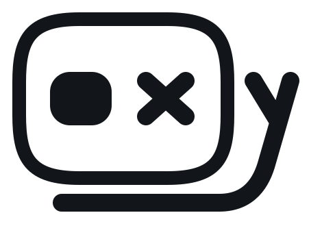

Підключіть OXY до Wi‑Fi, дивіться заряд і налаштовуйте звук. Нічого не треба встановлювати.
Якщо Chrome напише, що йому потрібен дозвіл на пошук пристроїв поблизу, натисніть «Змінити дозволи» → «Пристрої поблизу» → «Дозволити» і поверніться сюди. Це потрібно один раз, щоб говорити з роботом по Bluetooth. Сторінка нічого не збирає: політика конфіденційності.
Так телефон захищає вас: жоден сайт чи застосунок не бачить пристрої поруч без вашої згоди. Це потрібно зробити один раз.
Виберіть домашню мережу. Пароль зберігається лише в роботі. Потрібна мережа 2,4 ГГц.